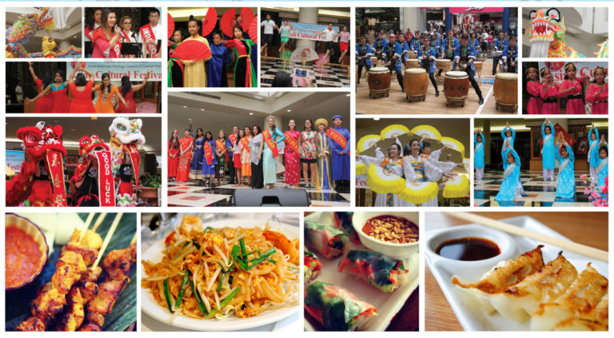

Asia

Asian people are incredibly diverse, and it is important to recognize that Asia is not a monolithic entity but rather a continent with significant variations within and among its regions. People in Asia belong to various ethnic groups, such as Han Chinese, Indians, Indonesians, Japanese, Koreans, and many more. These groups often have their own languages, cultural practices, and social structures.
Asian culture encompasses a vast array of diverse traditions, customs, languages, arts, music, and practices that have developed over centuries across the continent of Asia. Due to the immense cultural diversity within Asia, it is important to note that there is no single Asian culture but rather a mosaic of distinct cultures and subcultures.
Religions and Beliefs:
Asia is home to a wide range of religious beliefs including Hinduism, Buddhism, Islam, Confucianism, Taoism, Sikhism, and various indigenous religions. These religions have influenced the spiritual and philosophical foundations of Asian societies and have shaped their values, rituals, and traditions.
Family and Community:
The concept of family and community holds great importance in Asian cultures. Extended families often live together or maintain close relationships, emphasizing filial piety, respect for elders, and collective decision-making. The community plays a significant role in social interactions, support systems, and celebrations.
Art and Crafts:
Asian art is known for its intricacy, elegance, and diversity. Traditional art forms such as calligraphy, painting, pottery, sculpture, and silk weaving have a long history and often carry deep cultural and symbolic meanings. Craftsmanship in areas like woodwork, ceramics, textiles, and metalwork showcases the skilled artisans' creativity and attention to detail.
Music and Dance:
Music and dance are integral parts of Asian culture, with each country and region having its own unique styles and instruments. Traditional musical forms like classical Indian music, Chinese opera, Japanese Kabuki, and Indonesian Gamelan are examples of the rich musical heritage found in Asia. Various dance forms, including classical ballet, Bharatanatyam, traditional Chinese dance, and Balinese dance, also contribute to the cultural tapestry of the continent.
Cuisine:
Asian cuisine is renowned for its diversity, flavors, and culinary techniques. From spicy curries in South Asia to delicate sushi in Japan, from stir-fried noodles in China to fragrant spices in Southeast Asia, each country has its own distinct culinary traditions. Rice, noodles, seafood, spices, and a wide variety of vegetables are common ingredients used in Asian dishes.
Traditional Attire:
Asian countries have a rich heritage of traditional clothing, often characterized by vibrant colors, intricate patterns, and unique styles. Garments such as the kimono in Japan, saree in India, hanbok in Korea, and cheongsam in China are examples of traditional attire that are still worn on special occasions, cultural festivals, and weddings.